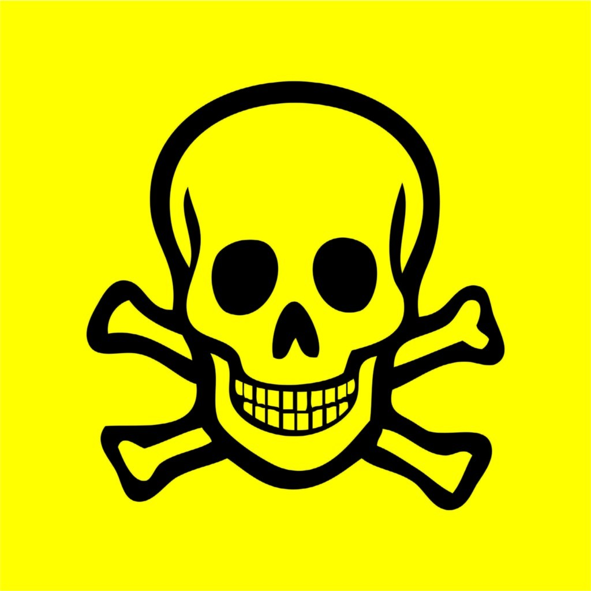

Washing your hands properly is a way to help protect yourself and your loved ones from illnesses like coronavirus and food poisoning
If you can see the dirt or grease on your hands, then use soap and water to clean them. Don't use the Hand Sanitizer.
Alcohol-based hand sanitizer will not eliminate all of the germs on your hands and it will not remove certain substances, such as pesticides and heavy metals. In these situations, opt for soap and water.
If you don’t have running water, then use alcohol-based hand sanitizer since it’s better than leaving your hands dirty. However, if you have access to soap and running water, wash your hands instead.
It should be recommanded that the sanitizers that contains high amount of alcohol atleast 60%. Studies also states that the sanitizer having concentration of alcohol in between 60 - 95% are simpler at killing germs than those of low concentration of alcohol or non-alcohol based sanitizers.
 Alcohol poisoning is when there’s too much alcohol in your blood, and it causes parts of your brain to shut down. It’s also called alcohol overdose. Drinking too much too quickly can affect your breathing, heart rate, body temperature and gag reflex and potentially lead to a coma and death.